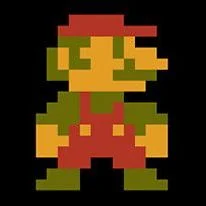

Records en Juegos
Aquí encontrarás los records más destacados en varios juegos populares, así como información sobre los jugadores que los lograron.
| Juego | Record | Jugador | Imagen |
|---|---|---|---|
| Super Mario Bros. | Record Mundial de velocidad: 4 minutos y 55 segundos. | John Speedrunner |  |
| Tetris | Record de puntaje máximo: 999,999 puntos. | TetrisMaster123 |  |
| Street Fighter II | Record de combos consecutivos: 30 combos. | FighterPro |  |
Niveles en Juegos
Descubre algunos de los niveles más icónicos en la historia de los videojuegos y aprende sobre los jugadores que los conquistaron.
| Juego | Nivel | Jugador | Imagen |
|---|---|---|---|
| The Legend of Zelda: Ocarina of Time | Bosque Kokiri | LinkMaster |  |
| Sonic the Hedgehog | Green Hill Zone | SonicSpeedster |  |
| Resident Evil 4 | El Pueblo | ResidentEvilPro |  |